%load_ext autoreload
%autoreload 2Hainich with ERA-Interim controls
from meteo_imp.kalman.fastai import *
from meteo_imp.kalman.filter import *
from meteo_imp.utils import *
from meteo_imp.data import *
from fastai.tabular.learner import *
from fastai.learner import *
from fastai.callback.all import *
from meteo_imp.kalman.fastai import show_results
import pandas as pd
import numpy as np
import torchhai = pd.read_parquet(hai_path)
hai64 = pd.read_parquet(hai_path64)
hai_era = pd.read_parquet(hai_era_path)
hai_era64 = pd.read_parquet(hai_era_path64)dls = imp_dataloader(hai64, hai_era64, var_sel = gen_var_sel(['TA', 'SW_IN', 'VPD']), block_len=200, gap_len=gen_gap_len(10, min_v=3), bs=20, control_lags=[1])# dls = imp_dataloader(hai64, hai_era64, var_sel = gen_var_sel(['TA', 'SW_IN', 'VPD']), block_len=200, gap_len=10, bs=20, control_lags=[1])Loss Only Gap
model1 = KalmanFilter.init_random(n_dim_state = hai.shape[1], n_dim_obs=hai.shape[1], n_dim_contr=hai_era.shape[1] * 2, dtype=torch.float64).cuda()loss1 = loss_func=KalmanLoss(only_gap=True)
learn1 = Learner(dls, model1, loss1, cbs=[ShowGraphCallback, Float64Callback], metrics=imp_metrics)model1Kalman Filter (3 obs, 3 state, 6 contr)
trans matrix (A)
| state | x_0 | x_1 | x_2 |
|---|---|---|---|
| x_0 | 0.2665 | 0.3439 | 0.2551 |
| x_1 | 0.4590 | 0.7692 | 0.3849 |
| x_2 | 0.0712 | 0.1367 | 0.7893 |
trans cov (Q)
| state | x_0 | x_1 | x_2 |
|---|---|---|---|
| x_0 | 1.2353 | 1.4324 | 0.9783 |
| x_1 | 1.4324 | 2.0504 | 1.4465 |
| x_2 | 0.9783 | 1.4465 | 1.0693 |
trans off
| state | offset |
|---|---|
| x_0 | 0.3420 |
| x_1 | 0.4286 |
| x_2 | 0.8860 |
obs matrix (H)
| variable | x_0 | x_1 | x_2 |
|---|---|---|---|
| y_0 | 0.7490 | 0.3985 | 0.4413 |
| y_1 | 0.8824 | 0.7961 | 0.3637 |
| y_2 | 0.3141 | 0.1217 | 0.6834 |
obs cov (R)
| variable | y_0 | y_1 | y_2 |
|---|---|---|---|
| y_0 | 0.4816 | 0.0000 | 0.0000 |
| y_1 | 0.0000 | 0.1745 | 0.0000 |
| y_2 | 0.0000 | 0.0000 | 0.4889 |
obs off
| variable | offset |
|---|---|
| y_0 | 0.7422 |
| y_1 | 0.2648 |
| y_2 | 0.5931 |
contr matrix (B)
| state | c_0 | c_1 | c_2 | c_3 | c_4 | c_5 |
|---|---|---|---|---|---|---|
| x_0 | 0.5786 | 0.3266 | 0.4311 | 0.2817 | 0.1239 | 0.6794 |
| x_1 | 0.5328 | 0.2694 | 0.6463 | 0.3800 | 0.7069 | 0.9469 |
| x_2 | 0.1335 | 0.8204 | 0.4260 | 0.1540 | 0.5468 | 0.8824 |
init state mean
| state | mean |
|---|---|
| x_0 | 0.1295 |
| x_1 | 0.2393 |
| x_2 | 0.3728 |
init state cov
| state | x_0 | x_1 | x_2 |
|---|---|---|---|
| x_0 | 0.8077 | 0.1257 | 0.4980 |
| x_1 | 0.1257 | 0.7239 | 0.3575 |
| x_2 | 0.4980 | 0.3575 | 0.4991 |
learn1.fit(5, 2e-2)
show_results(learn1)| epoch | train_loss | valid_loss | rmse | rmse_gap | r2 | r2_gap | time |
|---|---|---|---|---|---|---|---|
| 0 | 72.293998 | 31.719601 | 0.595213 | 1.017190 | -35.914009 | -1988103110039527821684074610688.000000 | 01:11 |
| 1 | 40.077467 | 25.714529 | 0.513537 | 0.701617 | -5.535677 | -455917282590841898849114521600.000000 | 01:13 |
| 2 | 29.577841 | 22.530322 | 0.451148 | 0.589785 | -3.923891 | -581511515194005733117286940672.000000 | 01:16 |
| 3 | 24.748931 | 17.952697 | 0.367271 | 0.432952 | -1.067477 | -212539834965043350894372978688.000000 | 01:14 |
| 4 | 20.000014 | 17.084673 | 0.223620 | 0.346822 | 0.297770 | -63318963929580410808026791936.000000 | 01:17 |
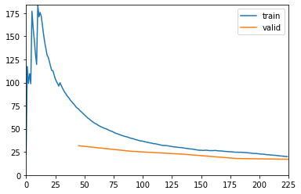
learn1.fit(5, 2e-2)
show_results(learn1)| epoch | train_loss | valid_loss | rmse | rmse_gap | r2 | r2_gap | time |
|---|---|---|---|---|---|---|---|
| 0 | 13.721919 | 13.174620 | 0.234537 | 0.323555 | -2.062600 | -5305563629850963862221750272.000000 | 01:16 |
| 1 | 11.759491 | 13.504236 | 0.203824 | 0.344850 | -1.544317 | -18525714783371284222987730944.000000 | 01:14 |
| 2 | 10.006743 | 7.795892 | 0.157194 | 0.233343 | 0.214478 | -26766029272278520024709201920.000000 | 01:14 |
| 3 | 8.955606 | 6.206111 | 0.141684 | 0.237647 | -0.274371 | -67291879382457101575708999680.000000 | 01:16 |
| 4 | 8.247486 | 8.156478 | 0.222079 | 0.308084 | -6.918422 | -128276544582302533316432101376.000000 | 01:14 |
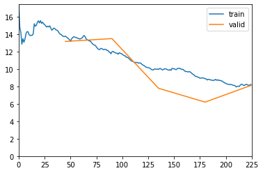
learn1.fit(5, 2e-2)
show_results(learn1)| epoch | train_loss | valid_loss | rmse | rmse_gap | r2 | r2_gap | time |
|---|---|---|---|---|---|---|---|
| 0 | 7.784756 | 4.218710 | 0.123671 | 0.211978 | 0.310601 | -116683893142132508236114296832.000000 | 01:15 |
| 1 | 6.640749 | 4.189888 | 0.169977 | 0.238434 | -0.751781 | -19857762251145019935950897152.000000 | 01:14 |
| 2 | 7.170833 | 6.016418 | 0.183049 | 0.234260 | -0.462028 | -26831717430361780553481453568.000000 | 01:14 |
| 3 | 5.390110 | 7.068553 | 0.181321 | 0.241580 | 0.649860 | -76836431943121111214175813632.000000 | 01:14 |
| 4 | 7.164222 | 3.156210 | 0.182498 | 0.222797 | 0.331408 | -30042830367187399437426098176.000000 | 01:12 |
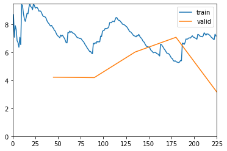
learn1.fit(5, 2e-2)
show_results(learn1)| epoch | train_loss | valid_loss | rmse | rmse_gap | r2 | r2_gap | time |
|---|---|---|---|---|---|---|---|
| 0 | 3.964126 | 6.146608 | 0.206928 | 0.234391 | 0.396003 | -72256797525758999239107543040.000000 | 01:13 |
| 1 | 3.281520 | 3.828922 | 0.196921 | 0.196690 | 0.614626 | -1910397254597076279487365120.000000 | 01:21 |
| 2 | 5.185062 | 4.491497 | 0.182338 | 0.227670 | 0.858049 | -77565617505545061926256508928.000000 | 01:29 |
| 3 | 3.956668 | 2.874033 | 0.207283 | 0.225645 | 0.682655 | -7205118772262491987170557952.000000 | 01:22 |
| 4 | 5.673961 | 10.914154 | 0.211853 | 0.262783 | 0.859957 | -41470920959040655409398415360.000000 | 01:12 |
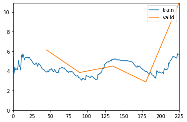
# learn1.save("trained_loss_only_gap_10_jan")Path('models/trained_loss_only_gap_10_jan.pth')learn1_losses = []Simple training
loss_func_ng = loss_func=KalmanLoss(only_gap=False)
learn = Learner(dls, model, loss_func_ng, cbs=[ShowGraphCallback, Float64Callback], metrics=[rmse_mask, r2_mask])learn.fit(10, 2e-2)| epoch | train_loss | valid_loss | rmse | r2 | time |
|---|---|---|---|---|---|
| 0 | 607.058369 | 515.446269 | 0.366365 | -18.953901 | 01:39 |
| 1 | 475.921415 | 359.786886 | 0.180804 | -1.877576 | 01:49 |
| 2 | 348.836041 | 215.060710 | 0.133364 | -0.778128 | 01:59 |
| 3 | 213.805165 | 71.989816 | 0.132907 | -1.213813 | 02:04 |
| 4 | 84.765372 | -51.247118 | 0.119912 | -0.064529 | 02:07 |
| 5 | -41.113329 | -182.953342 | 0.075950 | 0.661874 | 02:08 |
| 6 | -169.925174 | -311.168974 | 0.064809 | -0.035979 | 02:04 |
| 7 | -295.206480 | -432.871735 | 0.063802 | 0.936280 | 02:04 |
| 8 | -424.575996 | -562.614567 | 0.048965 | 0.908722 | 01:59 |
| 9 | -545.755660 | -679.265734 | 0.045273 | 0.648892 | 02:00 |
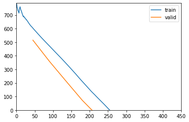
show_results(learn)learn.recorder.plot_loss()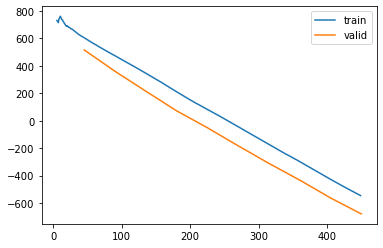
learn.fit(10, 7e-3)| epoch | train_loss | valid_loss | rmse | r2 | time |
|---|---|---|---|---|---|
| 0 | -701.508009 | -719.499257 | 0.042491 | 0.364471 | 01:46 |
| 1 | -733.036040 | -751.966214 | 0.039660 | 0.615754 | 01:51 |
| 2 | -766.875790 | -802.134089 | 0.037965 | 0.984316 | 01:46 |
| 3 | -802.225402 | -842.992511 | 0.034145 | 0.977250 | 01:44 |
| 4 | -840.689974 | -884.280286 | 0.040979 | 0.983124 | 01:53 |
| 5 | -880.406406 | -921.259744 | 0.036642 | 0.871848 | 01:45 |
| 6 | -920.637857 | -965.865153 | 0.034881 | 0.975765 | 01:47 |
| 7 | -960.791818 | -1002.702275 | 0.034850 | 0.629993 | 01:49 |
| 8 | -1003.434672 | -1048.419952 | 0.031607 | 0.975755 | 01:48 |
| 9 | -1035.639274 | -1066.565967 | 0.040136 | 0.435163 | 01:50 |
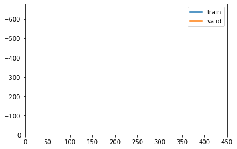
show_results(learn)train only on gap
learn.loss_func = KalmanLoss(only_gap=True)show_results(learn)learn.fit(10, 7e-3)| epoch | train_loss | valid_loss | rmse | r2 | time |
|---|---|---|---|---|---|
| 0 | -0.005931 | -2.003364 | 0.030327 | 0.985116 | 01:14 |
| 1 | -1.177973 | -3.447589 | 0.029919 | 0.704350 | 01:16 |
| 2 | -1.061323 | 0.247962 | 0.034471 | 0.881624 | 01:22 |
| 3 | -1.619825 | -0.819893 | 0.031246 | 0.990277 | 01:17 |
| 4 | -2.642889 | -2.878098 | 0.031077 | -0.946337 | 01:18 |
| 5 | -3.325557 | 2.120081 | 0.038847 | 0.991815 | 01:20 |
| 6 | -4.295325 | -1.668097 | 0.035035 | 0.985702 | 01:18 |
| 7 | -2.293203 | -0.351283 | 0.033916 | 0.910861 | 01:19 |
| 8 | -2.816982 | -2.604867 | 0.031628 | 0.669590 | 01:19 |
| 9 | -2.989582 | -2.357790 | 0.032688 | 0.983338 | 01:17 |
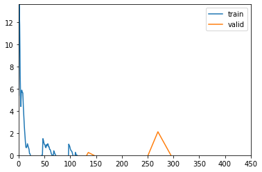
learn.recorder.plot_loss()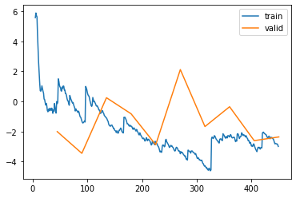
learn.metrics = learn.metrics + [mk_metric(m) for m in [rmse_gap, r2_gap]]show_results(learn)learnKalman Filter (3 obs, 3 state, 6 contr)
trans matrix (A)
| state | x_0 | x_1 | x_2 |
|---|---|---|---|
| x_0 | 0.9932 | 0.2895 | -0.2506 |
| x_1 | 0.1582 | 0.5455 | 0.3679 |
| x_2 | -0.1023 | 0.6036 | 0.4589 |
trans cov (Q)
| state | x_0 | x_1 | x_2 |
|---|---|---|---|
| x_0 | 0.0317 | -0.0000 | 0.0032 |
| x_1 | -0.0000 | 0.0277 | 0.0079 |
| x_2 | 0.0032 | 0.0079 | 0.0268 |
trans off
| state | offset |
|---|---|
| x_0 | -0.0705 |
| x_1 | 0.0512 |
| x_2 | -0.1263 |
obs matrix (H)
| variable | x_0 | x_1 | x_2 |
|---|---|---|---|
| y_0 | 0.0415 | 0.0734 | 0.0369 |
| y_1 | 0.1477 | -0.5466 | 0.4599 |
| y_2 | 0.1749 | 0.0563 | -0.0193 |
obs cov (R)
| variable | y_0 | y_1 | y_2 |
|---|---|---|---|
| y_0 | 0.0000 | 0.0000 | 0.0000 |
| y_1 | 0.0000 | 0.0000 | 0.0000 |
| y_2 | 0.0000 | 0.0000 | 0.0000 |
obs off
| variable | offset |
|---|---|
| y_0 | 0.0593 |
| y_1 | 0.1921 |
| y_2 | 0.4388 |
contr matrix (B)
| state | c_0 | c_1 | c_2 | c_3 | c_4 | c_5 |
|---|---|---|---|---|---|---|
| x_0 | -0.4222 | 0.6555 | -0.0202 | -0.9495 | 0.4507 | 0.1714 |
| x_1 | 0.0009 | -0.0957 | 0.1792 | 0.3218 | -0.5409 | -0.2363 |
| x_2 | 0.2752 | 0.8957 | -0.1440 | 0.1622 | 0.1775 | -0.0837 |
init state mean
| state | mean |
|---|---|
| x_0 | -0.3115 |
| x_1 | 0.5003 |
| x_2 | 0.5133 |
init state cov
| state | x_0 | x_1 | x_2 |
|---|---|---|---|
| x_0 | 2.3021 | 0.7211 | 0.6520 |
| x_1 | 0.7211 | 3.7494 | 3.8710 |
| x_2 | 0.6520 | 3.8710 | 5.0761 |
# learn.save("trained_hainich_control_9_jan_v1")Path('models/trained_hainich_control_9_jan_v1.pth')Multiple losses training
inp, targ = dls.one_batch()
inp[0].eq(targ[0]).all()
inp[1].all(1).all(1).any()tensor(False, device='cuda:0')inp[1].all(1).all(1)tensor([False, False, False, False, False, False, False, False, False, False,
False, False, False, False, False, False, False, False, False, False],
device='cuda:0')inp[1][18].all()tensor(False, device='cuda:0')for _ in range(100):
inp, targ = dls.one_batch()
assert not inp[1].all(1).all(1).any()loss_func_g = loss_func=KalmanLoss(only_gap=True)
learn = Learner(dls, model, loss_func_g, cbs=[ShowGraphCallback, Float64Callback], metrics=imp_metrics)learn.fit(5, 2e-2)| epoch | train_loss | valid_loss | rmse | rmse_gap | r2 | r2_gap | time |
|---|---|---|---|---|---|---|---|
| 0 | 35.681259 | 25.316821 | 0.569263 | 0.675936 | -11.686040 | -4623607617801388104142699888640.000000 | 01:11 |
| 1 | 28.467558 | 23.233029 | 0.524849 | 0.610395 | -2.279983 | -2785450798303600881197612269568.000000 | 01:12 |
| 2 | 24.512202 | 21.556061 | 0.508569 | 0.522891 | -1.991859 | -1787686587625842508214908747776.000000 | 01:17 |
| 3 | 22.205898 | 18.522426 | 0.504695 | 0.497300 | -2.575984 | -2311579056314112802293087731712.000000 | 01:14 |
| 4 | 19.906797 | 16.373493 | 0.532846 | 0.453842 | -1.954186 | -2977305927889536455278742994944.000000 | 01:13 |
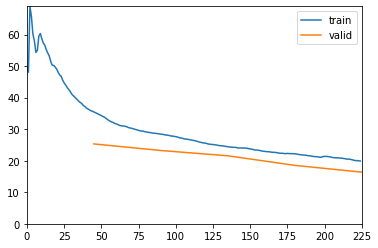
learnKalman Filter (3 obs, 3 state, 6 contr)
trans matrix (A)
| state | x_0 | x_1 | x_2 |
|---|---|---|---|
| x_0 | 0.0550 | 0.8305 | 0.9071 |
| x_1 | 0.8076 | 0.7187 | 0.3710 |
| x_2 | 1.0252 | 0.9262 | 0.4660 |
trans cov (Q)
| state | x_0 | x_1 | x_2 |
|---|---|---|---|
| x_0 | 0.1091 | 0.0170 | 0.0334 |
| x_1 | 0.0170 | 0.0027 | 0.0052 |
| x_2 | 0.0334 | 0.0052 | 0.0103 |
trans off
| state | offset |
|---|---|
| x_0 | 1.0085 |
| x_1 | 0.2683 |
| x_2 | 0.1844 |
obs matrix (H)
| variable | x_0 | x_1 | x_2 |
|---|---|---|---|
| y_0 | 0.0586 | -0.0735 | 0.2603 |
| y_1 | 0.3055 | 0.4040 | 0.4354 |
| y_2 | 0.2157 | 0.9007 | 0.4757 |
obs cov (R)
| variable | y_0 | y_1 | y_2 |
|---|---|---|---|
| y_0 | 0.0795 | 0.0000 | 0.0000 |
| y_1 | 0.0000 | 0.6049 | 0.0000 |
| y_2 | 0.0000 | 0.0000 | 0.1729 |
obs off
| variable | offset |
|---|---|
| y_0 | 0.0631 |
| y_1 | 0.6257 |
| y_2 | 0.8232 |
contr matrix (B)
| state | c_0 | c_1 | c_2 | c_3 | c_4 | c_5 |
|---|---|---|---|---|---|---|
| x_0 | 0.1065 | -0.1080 | -0.8654 | -0.3202 | -0.0629 | -0.2701 |
| x_1 | -1.0667 | -0.2948 | -0.0322 | -0.4331 | 0.0113 | -0.1139 |
| x_2 | 0.9766 | 0.2488 | -0.2589 | 0.5920 | 0.3605 | -0.1070 |
init state mean
| state | mean |
|---|---|
| x_0 | -0.0949 |
| x_1 | 0.0299 |
| x_2 | 0.0380 |
init state cov
| state | x_0 | x_1 | x_2 |
|---|---|---|---|
| x_0 | 0.1153 | -0.1604 | -0.1218 |
| x_1 | -0.1604 | 0.4181 | 0.8881 |
| x_2 | -0.1218 | 0.8881 | 3.4152 |
show_results(learn)learn.model.use_smooth = Falselearn.fit(5, 2e-2)| epoch | train_loss | valid_loss | rmse | rmse_gap | r2 | r2_gap | time |
|---|---|---|---|---|---|---|---|
| 0 | 98.515476 | 76.464946 | 3.587664 | 9.146169 | -556.182098 | -1785660235166445426744542481088512.000000 | 00:53 |
| 1 | 65.572638 | 42.698891 | 1.761536 | 4.240729 | -961.723482 | -978013546570620530329106643943424.000000 | 00:56 |
| 2 | 55.393772 | 45.721459 | 1.547412 | 3.812272 | -358.409783 | -482895226247397956117409612955648.000000 | 00:58 |
| 3 | 50.176197 | 45.659879 | 1.704954 | 4.215966 | -1291.738173 | -256935436439301020515829859483648.000000 | 01:01 |
| 4 | 48.109062 | 50.373996 | 1.703977 | 4.298851 | -94.260413 | -526513865521285616344450662924288.000000 | 00:56 |
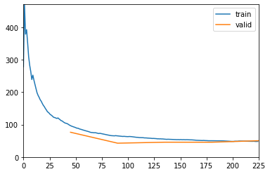
learnKalman Filter (3 obs, 3 state, 6 contr)
trans matrix (A)
| state | x_0 | x_1 | x_2 |
|---|---|---|---|
| x_0 | -0.1561 | 0.6142 | 0.6362 |
| x_1 | 0.5261 | 0.4458 | 0.1055 |
| x_2 | 1.2212 | 1.1215 | 0.6900 |
trans cov (Q)
| state | x_0 | x_1 | x_2 |
|---|---|---|---|
| x_0 | 3.4574 | 3.0900 | 2.8140 |
| x_1 | 3.0900 | 2.8125 | 2.5484 |
| x_2 | 2.8140 | 2.5484 | 2.3123 |
trans off
| state | offset |
|---|---|
| x_0 | 0.8462 |
| x_1 | 0.1179 |
| x_2 | 0.0779 |
obs matrix (H)
| variable | x_0 | x_1 | x_2 |
|---|---|---|---|
| y_0 | 0.0486 | -0.0819 | 0.2397 |
| y_1 | 0.2923 | 0.3889 | 0.4084 |
| y_2 | 0.2078 | 0.8587 | 0.4657 |
obs cov (R)
| variable | y_0 | y_1 | y_2 |
|---|---|---|---|
| y_0 | 0.1062 | 0.0000 | 0.0000 |
| y_1 | 0.0000 | 0.3648 | 0.0000 |
| y_2 | 0.0000 | 0.0000 | 0.3026 |
obs off
| variable | offset |
|---|---|
| y_0 | 0.3044 |
| y_1 | 0.6826 |
| y_2 | 0.8804 |
contr matrix (B)
| state | c_0 | c_1 | c_2 | c_3 | c_4 | c_5 |
|---|---|---|---|---|---|---|
| x_0 | 0.1861 | -0.1349 | -0.7508 | -0.2323 | -0.0994 | -0.2119 |
| x_1 | -0.8815 | -0.2600 | 0.1871 | -0.2865 | 0.0373 | 0.0849 |
| x_2 | 1.0668 | 0.1513 | -0.1757 | 0.6918 | 0.2565 | -0.0567 |
init state mean
| state | mean |
|---|---|
| x_0 | -0.1463 |
| x_1 | -0.1932 |
| x_2 | -0.0464 |
init state cov
| state | x_0 | x_1 | x_2 |
|---|---|---|---|
| x_0 | 0.4236 | 0.0944 | 0.3904 |
| x_1 | 0.0944 | 0.2095 | 0.6389 |
| x_2 | 0.3904 | 0.6389 | 6.4219 |
learn.use_smooth = Trueshow_results(learn)